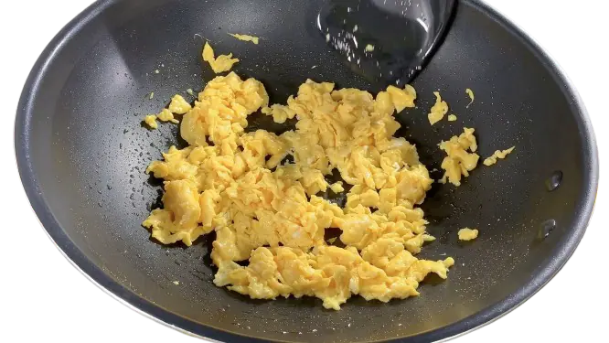
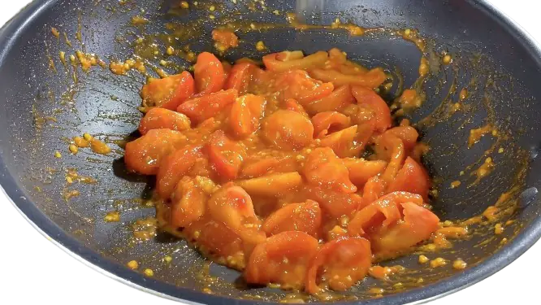
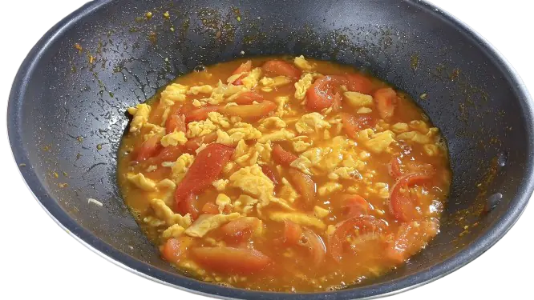

准备食材
番茄、鸡蛋、盐、糖、水淀粉、开水。
- 番茄去皮、切块；
- 准备鸡蛋液，加适量盐，少量水淀粉 （添加水淀粉，炒出来的鸡蛋会更加蓬松、香嫩），搅拌一分钟左右，将盐充分化开；


烹饪
- 起锅烧油，开中火煎鸡蛋，将鸡蛋液煎到凝固状，取出装盘备好；
- 锅下番茄，开中大火翻炒番茄，把番茄炒软、炒到起沙、炒出汁水；（如果番茄比较生，酸，可以加入适量番茄酱调下味道）
- 倒入开水；看个人洗好，喜欢汁多的可以加多点开水；
- 加入炒好的鸡蛋，翻炒均匀；
- 调味，加入适量盐、糖；继续搅拌均匀，让调料充分化开；
- 煮个一、两分钟，让番茄和鸡蛋充分融合；
- 加入少许的水淀粉，搅拌收汁，汤汁稍微浓稠就可以了；
- 最后，出锅前可以加点油后，再出锅。


